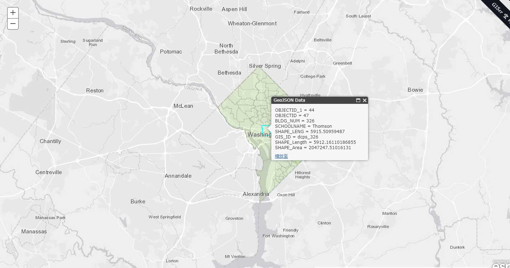

ArcGIS API for JavaScript不提供GeoJSON数据的加载，但是在Esri GitHub上提供了geojson-layer-js。geojson-layer-js是一个将GeoJSON数据加载到ArcGIS地图中的简单方法。它使用Terraformer将GeoJSON转换为ArcGIS JSON。它是一个自定义的GraphicsLayer，支持GraphicsLayer的所有操作，如：弹出窗口、渲染等。
下面简单说明如何使用geojson-layer-js。
geojson-layer-js的特点
- 从文件加载GeoJSON；
- 从服务器加载GeoJSON；
- 从FeatureCollection加载GeoJSON数据。
使用方法
| 参数名 | 数据类型 | 描述 | |
|---|---|---|---|
| url | String | 文件或服务器路径，服务器必须在同一个域或启用CORS，或使用代理。 | |
| data | Object[] | Optional | FeatureCollection，如果同时使用data和url，data会覆盖url。 |
| maxdraw | Number | Optional | 最大绘制的图形数，默认为1000。 |
1 | // 从文件加载 |
注意事项
- 所有GeoJSON数据必须是地理坐标系（wkid 4326）。
- 除非使用启用CORS的服务器或代理，否则所有GeoJSON资源都必须位于与应用程序相同的域上。
- Terraformer不支持dojo require（），并且必须直接加载到页面中。如下：
1 | <script src="https://unpkg.com/terraformer@1.0.7"></script> |
示例

源码
文件结构
|– js
|– | – geojsonlayer.js （geojson-layer-js可下载该文件）
|– data
|– | – dc-bike-share.json（GeoJSON数据）
index.html
1 |
|